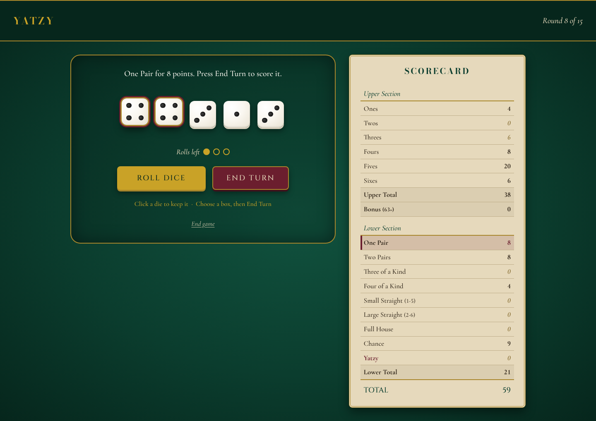
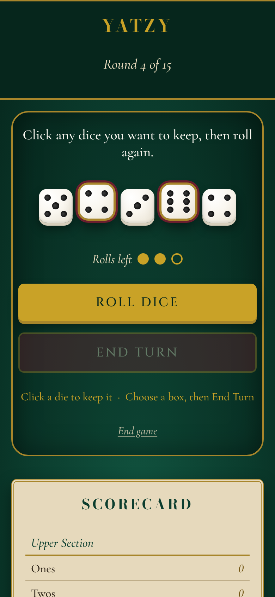
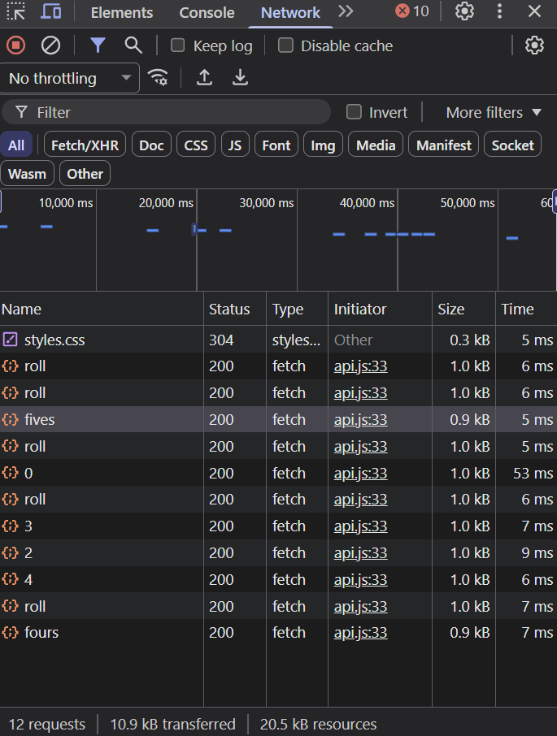
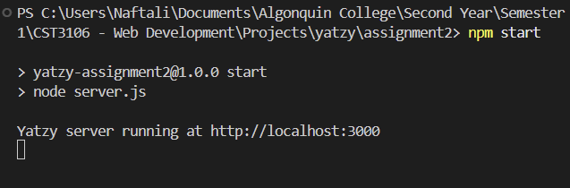

A single-player Yatzy game I built twice: first as a browser-only app,
then rebuilt so a Node.js and Express server runs the game and the
browser only draws it.
Players roll five dice up to three times per turn, keeping any dice
they like between rolls, then score the result in one of 15 boxes.
After 15 rounds the game ends and the scorecard is totalled, with a
50-point bonus for 63 or more in the upper section.

Round 8: two fours are kept, and the scorecard previews what the
dice would score in each open box.
Assignment 1: The browser version
Object-oriented game logic
The game is split into three classes, each in its own ES module:
Dice: the five dice, which ones are kept, and
rolling.
YatzyEngine: the rules, the score for every box,
and the scorecard.
YatzyGame: rounds, turns, rolls left and totals.
State is kept in private class fields (#values,
#round), so other code can only change it through the
class's methods.
DOM and events
main.js connects the classes to the page. Each die,
button and score box has a click listener. After every action, the
page is redrawn from the game's state, so what is on screen always
matches the game.
Dice pips are created as elements and placed with CSS Grid, so one
die design works for all six faces.
CSS techniques
Design tokens (CSS custom properties) for the felt, brass and
parchment colours and the fonts.
Flexbox for the dice row and controls; Grid for the pips.
A @keyframes tumble animation when dice are rolled.
Media queries at 900px and 480px that stack the board on smaller
screens.
prefers-reduced-motion turns the animation off for
users who ask for less motion.
Accessibility
Dice are real <button> elements, so they work
with the keyboard.
Each die's aria-label updates after every roll (for
example "Die 3 showing 5, kept"), and
aria-pressed tells screen readers whether it is
kept.
The message bar uses aria-live, so each new prompt
is read out.
Text colours on the parchment were checked against WCAG AA
contrast.
Testing
tests/yatzy_test.js runs 100 automated checks on the
three classes with Node, including 25 scoring cases with edge cases
such as four of a kind not counting as two pairs. An autoplay page
plays complete games on its own, and I tested manually on desktop
and phone sizes.

On phones, the media queries stack the board above the scorecard and
make the buttons full width.
Assignment 2: Moving the game to a server
In Assignment 2, I moved the game logic from the browser to a Node.js
and Express server. The server rolls the dice, applies the rules,
calculates every score and stores each game. The browser sends the
player's moves with the Fetch API and redraws itself from the state
the server sends back.
How a move works
The player clicks something: roll, keep a die, or score a box.
main.js calls a function in api.js, which
sends the request with fetch using
async/await.
The server checks the move against the rules. If it is allowed, it
updates the game and returns the full game state as JSON.
main.js redraws the page from that state. The browser
does no scoring itself.
REST API
Each kind of move has its own endpoint, and the HTTP method matches
what the request does.
Game API endpoints (base URL: /api/games)
Method
Endpoint
What it does
POST
/api/games
Starts a new game (201 Created)
GET
/api/games/:id
Gets a game's current state
POST
/api/games/:id/roll
Rolls every die that isn't kept
PUT
/api/games/:id/dice/:index
Keeps or releases one die
PUT
/api/games/:id/scores/:category
Scores a box and ends the turn
DELETE
/api/games/:id
Ends the game and removes it
Why these methods:GET only reads.
POST creates something new each time (a game, a roll).
PUT sets a value, so sending it twice gives the same
result. DELETE removes the game. Errors return the right
status code with a JSON message: 400 for an invalid
request, 404 for an unknown game, and
409 for a move that breaks a rule, such as a fourth roll.

DevTools Network tab during a game: every move is a
fetch request to the API.
Sample response
A real response from
POST /api/games/:id/roll (shortened). The server even
calculates the score previews, so the browser never needs the rules.
An Express Router in routes/games.js holds the
endpoints, with a shared middleware that finds the game by id.
An error-handling middleware returns JSON errors instead of
crashing.
Game state on the server
Games are stored in a Map, keyed by an id from
crypto.randomUUID(), so several games can run at
once.
Games idle for an hour are removed every 10 minutes, so memory
doesn't keep growing.
The browser saves the game id in localStorage, so
refreshing the page continues the same game.
The game logic lives outside public/, so players
can't read or change it.

Running the server with npm start.
Technologies used
JavaScript
ES modules, classes with private fields, DOM manipulation and
events.
JSON & Fetch API
Sending moves to the server and reading the game state it returns.
Async JavaScript
async/await and promises for every server
request.
Node.js & npm
Running the server and managing the Express package.
Express
Routing, middleware, static files and error handling for the REST
API.
jQuery
The dice roll animation and event handling in Assignment 2.
HTML & CSS
Semantic markup, ARIA, design tokens, Flexbox, Grid, animation and
media queries.
Git & GitHub
Version control with small, descriptive commits for each feature.
VS Code
Editor, integrated terminal and Live Server.
Highlights and challenges
Keeping the server in charge
The server checks every move, not just the page. Requests sent
straight to the API that break a rule, such as a fourth roll or
scoring a used box, are refused with a 409.
Double clicks
While a request is in progress, the page ignores more clicks, so a
double click can't send the same move twice.
Animation and server timing
The dice tumble while the server rolls. The real values only
appear once both the animation and the response have finished.
Server restarts
Games are kept in memory, so a restart clears them. If the page's
game no longer exists (404), it starts a new game and tells the
player instead of breaking.